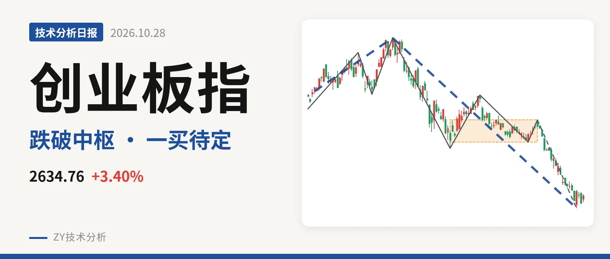
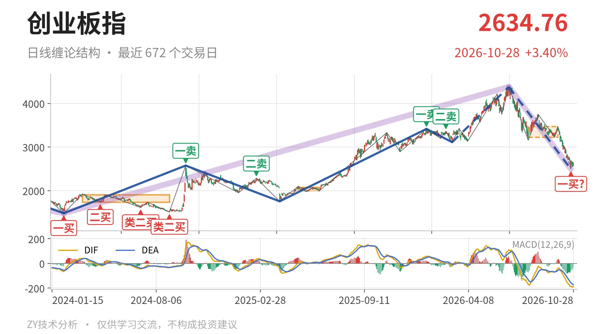
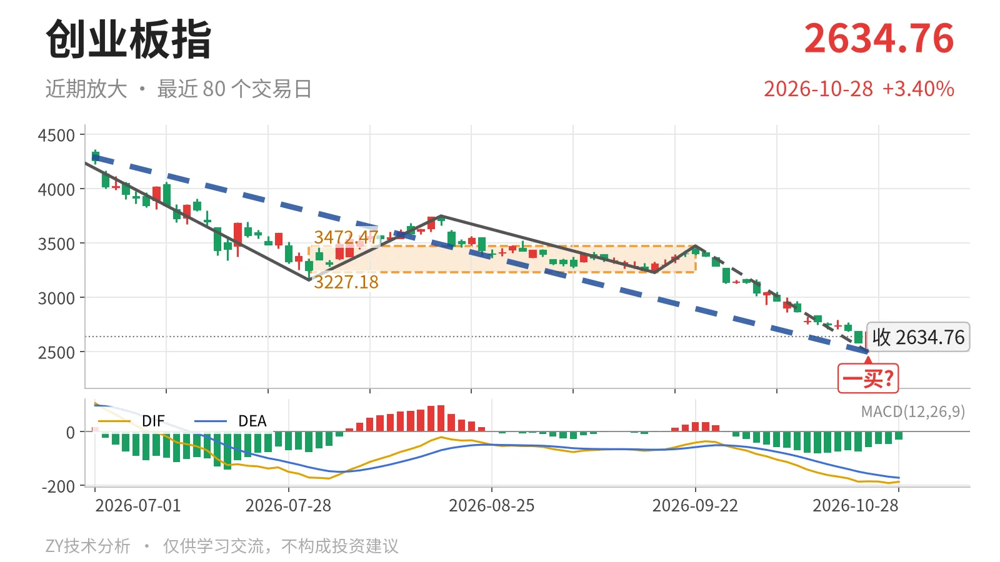

创业板指｜跌破中枢后暂定一买，反抽压力3227点附近

最近日线中枢 3227.18—3472.47点，收盘位于中枢之下
一句话：创业板指跌破最近中枢下沿，10月23日一买待定，反抽承压
📉 走势结构：日线下跌线段还在延续
更大级别上涨段（2024年2月5日至2026年6月25日）从1482.99点到4380.41点，还没有结束；但6月25日以来的日线下跌线段仍没有完成。该下跌线段自4380.41点运行至2494.22点，跌43.1%，内含5笔，当前没有结束。3月9日至6月25日的上涨线段被这段下跌破坏，日线线段结构已经由上涨转为下跌延伸。

🧭 中枢位置：最新价向下离开最近中枢
最新收盘2634.76点，已向下离开7月30日至9月22日中枢（3227.18—3472.47点），低于下沿18.4%。该日线笔中枢尚未完成，价格跌破下沿后形成向下离开，3227点一线成反抽压力。此前日线笔中枢从1996.96—2076.91点上移至3227.18—3472.47点，但价格未能守住该区域，中枢对价格由支撑转为压制。
🔍 买卖点：10月23日一买暂定，3月9日三买被跌破
日线笔级别，10月23日的2494.22点构成暂定的一买。所在笔9月22日至10月23日的下跌笔尚未走完，该买点会随这一笔的延续而变化。其后10月26日至10月28日出现3根K线，最高2671.81点、最低2548.11点，未能构成新笔，暂定性质未变。线段级别，3月9日三买3111.88点已被6月25日以来的下跌段跌破，该买点只对应更小级别。1月13日一卖3416.84点与2月25日二卖3363.18点所在的上涨笔已经结束，仍构成上方压力。

📊 背驰：绿柱面积缩小，DIF低点却下移
最关键的对比在9月22日以来下跌笔与6月25日至7月30日下跌笔之间。价格从3158.14点继续下探至2494.22点，创下新低；但绿柱面积由1837缩至842，DIF低点却从-171.1继续下探至-186.3。这种“面积缩、DIF不抬”的组合，说明没有出现“新低不新弱”，下跌动能尚未衰竭。这也是10月23日一买只能暂定的技术原因。
🧿 关键位置观察：反抽能否回3227点上方定性质
后续结构看反抽对3227点一线的态度。若反抽回不到3227点上方，结构上构成对7月30日至9月22日中枢的第三类卖点，6月25日以来的下跌段将延续。若重新站上3227点并守住，则下跌更可能是中枢扩展而非趋势性离开。当前价格低于中枢下沿18.4%，暂定一买后的反弹未成笔，结构偏弱。
⚠️ 本文为基于公开行情数据的缠论技术结构记录，由程序自动计算并生成，仅供学习交流，不构成任何投资建议。市场有风险，投资需谨慎。